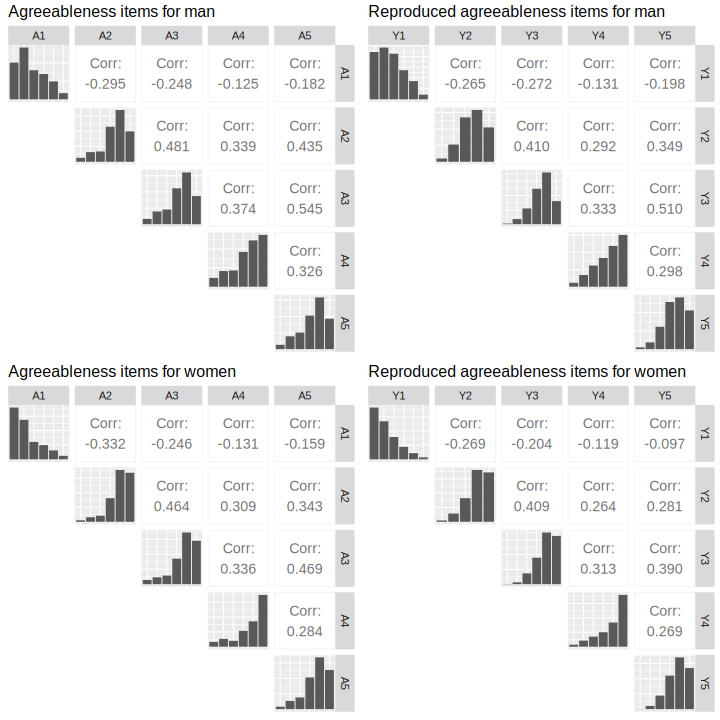

responsesR: simulate Likert item responses in R
This package provides an easy framework to simulate survey data commonly analyzed in applied social research, specifically Likert items. Users can specify latent variables by providing means, standard deviations, and optionally, skewness and correlations. The generated data set represents responses to Likert scale questions, which can be used for various purposes, such as validating theoretical findings obtained through factor analysis and structural equation modeling. The package also allows for the estimation of parameters from existing survey data to replicate it more accurately.
Installation
You can install the latest version using devtools:
install.packages("devtools")
devtools::install_github("markolalovic/responsesR")Code examples
Below are two simple examples. For more details, refer to the articles on the package website.
Simulating survey data
Here’s how to generate a simulated survey data. Consider a scenario where 10 participants who completed Course A and 20 participants who completed Course B have answered the question:
“How would you rate your experience with the course?”
Suppose that on average participants in Course A had a neutral experience, while those in Course B had a more positive experience. By choosing appropriate parameters for the latent variables and setting the number of categories (to K = 4 in this example), we can generate hypothetical responses (standard deviation sd = 1 and skewness gamma1 = 0, by default):
library(responsesR) # load the package
set.seed(12345) # to ensure reproducible results
course_A <- get_responses(n = 10, mu = 0, K = 4)
course_B <- get_responses(n = 20, mu = 1, K = 4)Click here to expand
# To summarize the results, create a data frame from all responses.
K <- 4
ngroups <- 2
cats <- c("Poor", "Fair", "Good", "Excellent")
data <- data.frame(
Course = rep(c("A", "B"), each=K),
Response = factor(rep(cats, ngroups), levels=cats),
Prop = c(get_prop_table(course_A, K), get_prop_table(course_B, K)))
data <- data[data$Prop > 0, ]
# > data
# Course Response Prop
# 1 A Poor 0.30
# 2 A Fair 0.20
# 3 A Good 0.20
# 4 A Excellent 0.30
# 6 B Fair 0.10
# 7 B Good 0.25
# 8 B Excellent 0.65
# The results can then be visualized using a grouped bar chart.
xbreaks <- seq(from = 0, to = .8, length.out = 5)
xlimits <- c(0, max(data$Prop) + 0.01)
xlabs <- sapply(xbreaks, percentify)
data$Course <- factor(data$Course, levels = c("B", "A"))
p <- ggplot(data=data, aes(x=Prop, y=Response, fill=Course)) +
geom_col(position=position_dodge2(preserve = "single", padding = 0)) +
scale_x_continuous(breaks = xbreaks, labels = xlabs, limits = xlimits) +
scale_y_discrete(limits = rev(levels(data$Response))) +
scale_fill_manual("legend",
values = c("#64BAAA", "#154E56"),
labels = c("Course A", "Course B"),
limits = c("A", "B")) +
ggtitle("How would you rate your experience with the course?") +
theme(text = element_text(size=10),
axis.title.y = element_blank(),
axis.title.x = element_blank(),
legend.position = "bottom",
legend.title = element_blank(),
plot.title = element_text(size=11))
p

For a pre- and post comparison, suppose that the participants completed the survey both before and after taking the course. And suppose that participants’ assessments of their skills in:
- Programming on average increased,
- Searching online stayed about the same,
- Solving problems increased in Course A, but decreased for participants in Course B.
Let’s simulate the survey data for this scenario using a 5-point Likert scale (K = 5, by default):
# Pre- and post assessments of skills: 1, 2, 3 for course A
pre_A <- get_responses(n = 10, mu = c(-1, 0, 1))
post_A <- get_responses(n = 10, mu = c(0, 0, 2))
# Pre- and post assessments of skills: 1, 2, 3 for course B
pre_B <- get_responses(n = 20, mu = c(-1, 0, 1))
post_B <- get_responses(n = 20, mu = c(0, 0, 0)) # <-- decrease for skill 3Click here to expand
# To summarize the results, create a data frame from all responses.
data <- list(pre_A, post_A, pre_B, post_B)
items <- 6 # for 3 questions before and after
K <- 5 # for a 5-point Likert scale
skills <- c("Programming", "Searching online", "Solving problems")
questions <- rep(as.vector(sapply(skills, function(skill) rep(skill, K))), 4)
questions <- factor(questions, levels = skills)
data <- data.frame (
Course = c(rep("Course A", items * K), rep("Course B", items * K)),
Question = questions,
Time = as.factor(rep(c(rep("before", 3*K), rep("after", 3*K)), 2)),
resp = rep(rep(1:K, 3), length(data)),
prop = as.vector(sapply(data, function(d) as.vector(t(get_prop_table(d, K))))))
# > head(data)
# Course Question Time resp prop
# 1 Course A Programming before 1 0.2
# 2 Course A Programming before 2 0.4
# 3 Course A Programming before 3 0.3
# 4 Course A Programming before 4 0.0
# 5 Course A Programming before 5 0.1
# 6 Course A Searching online before 1 0.1
# And visualize the results with a stacked bar chart:
data_pos <- data[data$resp >= 4, ]
data_neg <- data[data$resp <= 2, ]
data_neu <- data[data$resp == 3, ]
data_neu$prop <- data_neu$prop / 2
data_pos <- rbind(data_pos, data_neu)
data_pos$resp <- factor(data_pos$resp, levels = rev(1:5))
data_neg <- rbind(data_neg, data_neu)
data_neg$prop <- (-data_neg$prop)
data_neg$resp <- factor(data_neg$resp, levels = 1:5)
color_palette <- brewer.pal(n=5, name = "BrBG")
color_palette[3] <- "#bababaff"
p <- ggplot(data = data_pos, aes(x = Time, y = prop, fill = resp)) +
geom_col() +
geom_col(data = data_neg) +
coord_flip() +
facet_nested(
rows = vars(Question, Course), switch = "y",
strip = strip_nested(size = "variable"),
labeller = labeller(Question = label_wrap_gen(width = 10))
) +
theme_bw() +
theme(strip.placement = "outside") +
theme(
axis.ticks.x = element_blank(),
axis.ticks.y = element_blank(),
legend.position = "bottom",
legend.title = element_blank(),
text = element_text(size = 10),
strip.text.y.left = element_text(angle = 0, size = 8),
panel.spacing.y = unit(c(2, 5, 2, 5, 2), "mm")
) +
xlab("") +
ylab("Percentage") +
scale_y_continuous(limits = c(-1, 1),
breaks = seq(from = -1, to = 1, by = 0.5),
labels = c(100, 50, 0, 50, 100)) +
scale_fill_manual("", breaks = 1:5, values = color_palette,
labels = c("Very poor", "Poor", "Fair", "Good", "Very good"))
p

Replicating survey data
The following sample code covers the topic of replicating survey data in order to create scale scores. For this, we will use part of bfi dataset from package psych. In particular, the first 5 items A1-A5 corresponding to agreeableness and attribute gender:
Each item was answered on a six point scale ranging from 1 (very inaccurate), to 6 (very accurate) and the size of the female and male samples were 1881 and 919 respectively:Click here to expand
# Males = 1, Females = 2.
mapdf <- data.frame(old = 1:2, new = c("Male", "Female"))
data$gender <- mapdf$new[match(data$gender, mapdf$old)]
# Impute the missing values.
for (var in vars) {
data[, var][is.na(data[, var])] <- median(data[, var], na.rm=TRUE)
}
knitr::kable(head(data), format="html")
table(data$gender)
| A1 | A2 | A3 | A4 | A5 | gender | |
|---|---|---|---|---|---|---|
| 61617 | 2 | 4 | 3 | 4 | 4 | Male |
| 61618 | 2 | 4 | 5 | 2 | 5 | Female |
| 61620 | 5 | 4 | 5 | 4 | 4 | Female |
| 61621 | 4 | 4 | 6 | 5 | 5 | Female |
| 61622 | 2 | 3 | 3 | 4 | 5 | Male |
| 61623 | 6 | 6 | 5 | 6 | 5 | Female |
Separate the items into two groups according to their gender.
items_M <- data[data$gender == "Male", vars]
items_F <- data[data$gender == "Female", vars]To reproduce the items, start by estimating the parameters of the latent variables, assuming they are normal (gamma1 = 0 by default) and providing the number of possible response categories K = 6:
params_M <- estimate_parameters(data = items_M, K = 6)
params_F <- estimate_parameters(data = items_F, K = 6)
params_M
#> items
#> estimates A1 A2 A3 A4 A5
#> mu -0.6618876 0.8649575 0.7645033 0.8412600 0.7734527
#> sd 1.0967866 0.7925097 0.8540241 1.1957912 0.8910793
params_F
#> items
#> estimates A1 A2 A3 A4 A5
#> mu -1.1272393 1.1838317 1.0758738 1.3342088 0.9543986
#> sd 1.1582560 0.7762984 0.8187612 1.4088157 0.8493250Then, generate new responses to the items using the estimated parameters and correlations:
set.seed(12345) # to ensure reproducible results
new_items_M <- get_responses(n = nrow(items_M),
mu = params_M["mu", ],
sd = params_M["sd", ],
K = 6,
R = cor(items_M))
new_items_F <- get_responses(n = nrow(items_F),
mu = params_F["mu", ],
sd = params_F["sd", ],
K = 6,
R = cor(items_F))To compare the results, we can plot the correlation matrix with bar charts on the diagonal:

The next step would be to create agreeableness scale scores for both groups of participants, by taking the average of these 5 items and visualize the results with a grouped boxplot:Click here to expand
# Combine new items and gender in new_data data frame.
new_data <- data.frame(rbind(new_items_M, new_items_F))
new_data$gender <- c(rep("Male", nrow(items_M)), rep("Female", nrow(items_F)))
head(new_data)
# We also need to reverse the first item because it has negative correlations
data$A1 <- (min(data$A1) + max(data$A1)) - data$A1
new_data$Y1 <- (min(new_data$Y1) + max(new_data$Y1)) - new_data$Y1
# Create agreeableness scale scores
data$agreeable <- rowMeans(data[, vars])
new_data$agreeable <- rowMeans(new_data[, c("Y1", "Y2", "Y3", "Y4", "Y5")])
# And visualize the results with a grouped boxplot.
scale_boxplot <- function(data, title="") {
xbreaks <- seq(from = 2, to = 6, length.out = 3)
p <- ggplot(data, aes(x = agreeable, y = gender)) +
geom_boxplot() +
scale_x_continuous(breaks = xbreaks) +
ggtitle(title) +
theme(text = element_text(size = 8),
plot.title = element_text(size=10),
axis.title.y = element_blank())
return(p)
}
p1 <- scale_boxplot(data, "Agreeableness in men and women")
p2 <- scale_boxplot(new_data, "Reproduced agreeableness in men and women")
plot_grid(p1, p2, nrow = 2)

Dependency statement
To maintain a lightweight package, responsesR only imports mvtnorm, along with the standard R packages stats and graphics, which are typically included in R releases. An additional suggested dependency is the package sn, necessary only for generating random responses from correlated Likert items with multivariate skew normal latent distribution. However, the package prompts the user to install this dependency during interactive sessions.
Contributions
Feel free to create issues for bugs or suggestions on the issues page.
You can also make changes and submit a pull request. Contributions may include bug fixes, new features or documentation improvements.